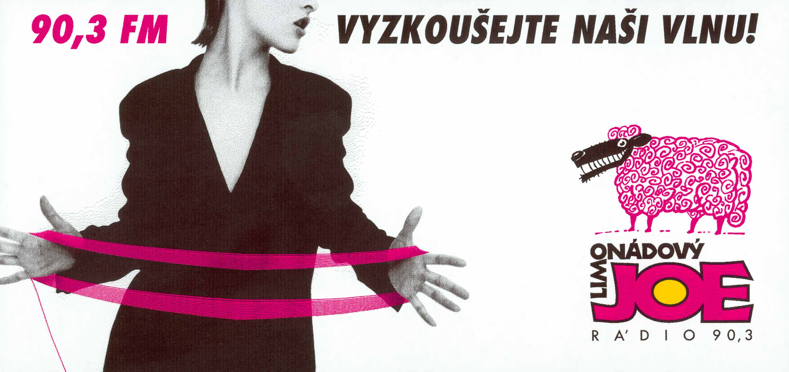

O co jde?
Radio Limonádový JOE bylo reálné rádio, které fungovalo na území České republiky mezi roky 1998 a 2005. Moderátoři, činní jako divadelní herci, se nejprve soustředili okolo Radia Mama, v současné době projekt pokračuje jako Rádio Ořechovka.
Proč existuje tento web?
Od ukončení vysílání mi toto radio v českém éteru chybí, a proto jsem se rozhodl vytvořit tyto stránky jakožto památník pro jeho fanoušky, kde si alespoň prostřednictvím několika dostupných záznamů budou moci zavzpomínat.
Výzva
Pokud vlastníte další nahrávky vysílání Radia Limonádový Joe, dejte mi prosím vědět na ok@krtkovo.eu
Zde si vyberte, co přehrát:
Paní Pelikánová a přátelé
- MIX Track_01
- MIX Track_02
- MIX Track_03
Ranní show Doktora Vinetúa a Mistra Kaliny
účinkují: Jiří Macháček a Tomáš Hanák
- 1998/12/22 - 1. část
- 1998/12/22 - 2. část
- 1999/05/12 - 1. část
- 1999/05/12 - 2. část
- 1999/06/08 - 1. část
- 1999/06/08 - 2. část
- 1999/06/08 - 3. část
- 1999/06/08 - 4. část
- 2000/01/12 - 1. část
- 2000/01/12 - 2. část
- 2000/01/12 - 3. část
- 2000/01/12 - 4. část
- 2000/01/13 - 1. část
- 2000/01/13 - 2. část
- 2000/01/13 - 3. část
- 2000/01/13 - 4. část
- 2000/02/04 - 1. část
- 2000/02/04 - 2. část
- 2000/02/04 - 3. část
- 2000/02/04 - 4. část
- 2000/02/07 - 1. část
- 2000/02/07 - 2. část
- 2000/02/20 - 1. část
- 2000/02/20 - 2. část
- 2000/02/20 - 3. část
- 2000/02/20 - 4. část
- 2000/03/08 - 1. část
- 2000/03/08 - 2. část
- 2000/06/07 - 1. část
- 2000/06/07 - 2. část
- 2000/06/26 - 1. část
- 2000/06/26 - 2. část
